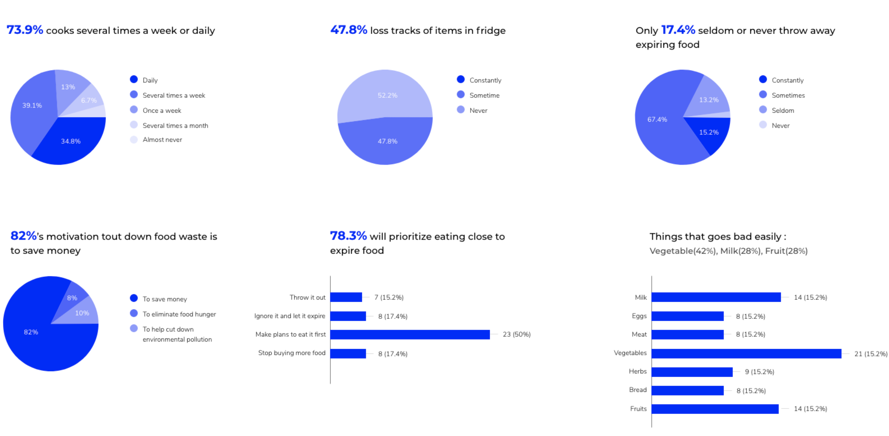
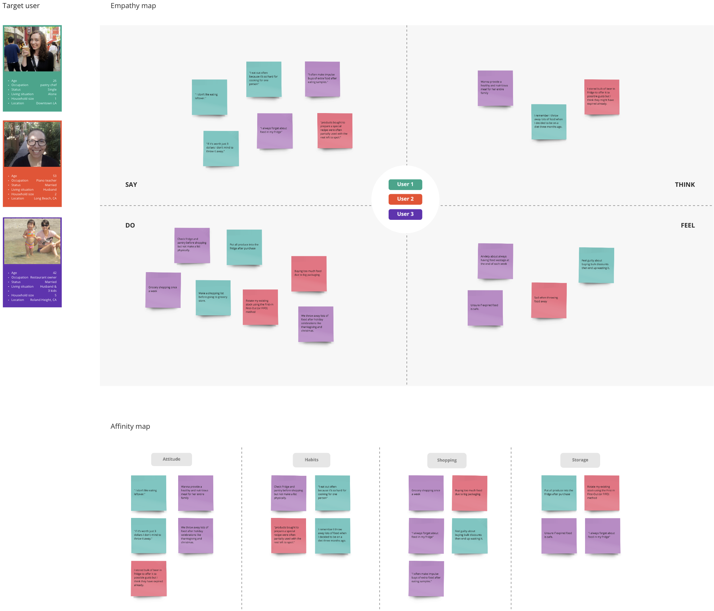
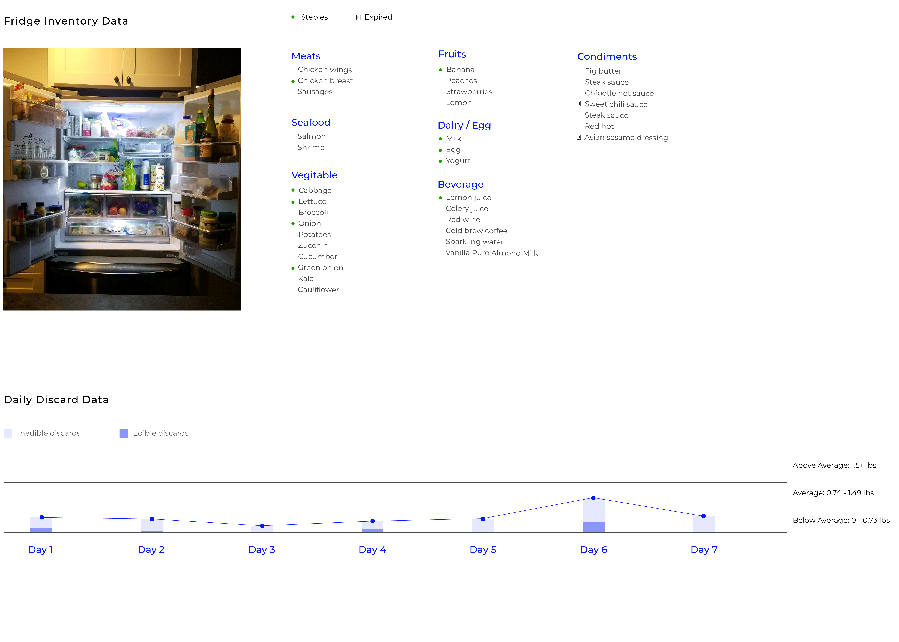

Refine the relationship between human and food
Introduction
Food Preservation
Food Storage
Individual Behavior
Government Policy
New Technology
Individual Behavior
Online & offline survey

Interview

Wastage & consumption habit tracking
